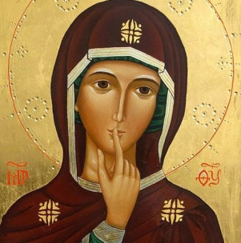

Virgo Fidelis, sé Tú misma nuestra Superiora Inmaculada. Cuece tu Obra entre las llamas de tu Corazón, a molde DON TOTAL. Entre tus manos podríamos conseguir una legión de almas dadas sin reserva alguna.
El Corazón del Monasterio
Un día en nuestra comunidad es una entrega constante al Señor. Si sientes el deseo profundo de dedicar tu vida a la adoración y la intercesión, aquí podrías encontrar tu hogar.

Oración Continua
Nuestra vida es un diálogo incesante con Dios, sosteniendo a la Iglesia y al mundo a través de la liturgia y la oración personal.

Adoración Eucarística
El centro de nuestro día. Postradas ante el Santísimo Sacramento, reparamos y amamos por aquellos que no le conocen.

Sagrado Silencio
El silencio no es vacío, sino el espacio necesario para escuchar la voz del Espíritu Santo y cultivar la unión con Dios.
Espiritualidad para el Mundo
El Rosario 7P y el Grupo Laudate Mariam
Nuestra espiritualidad no se queda entre los muros del monasterio. Invitamos a todos los fieles a unirse espiritualmente a nuestra Obra a través del Rosario 7P, una profunda forma de oración mariana que nos une en un mismo corazón.
Si deseas llevar una vida de oración más profunda en medio del mundo, el Grupo Laudate Mariam es tu casa. Únete a esta familia espiritual de seglares comprometidos.
Descargas (PDF)
Nuestra Comunidad